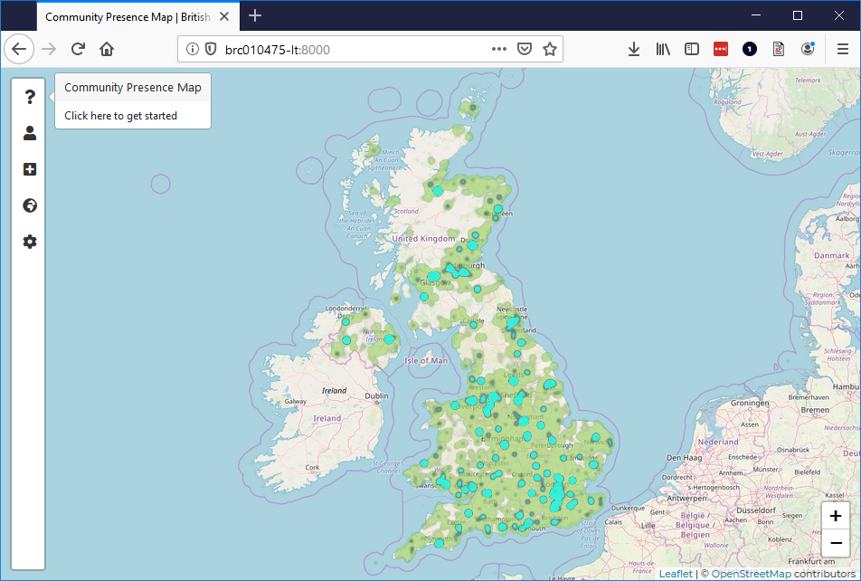
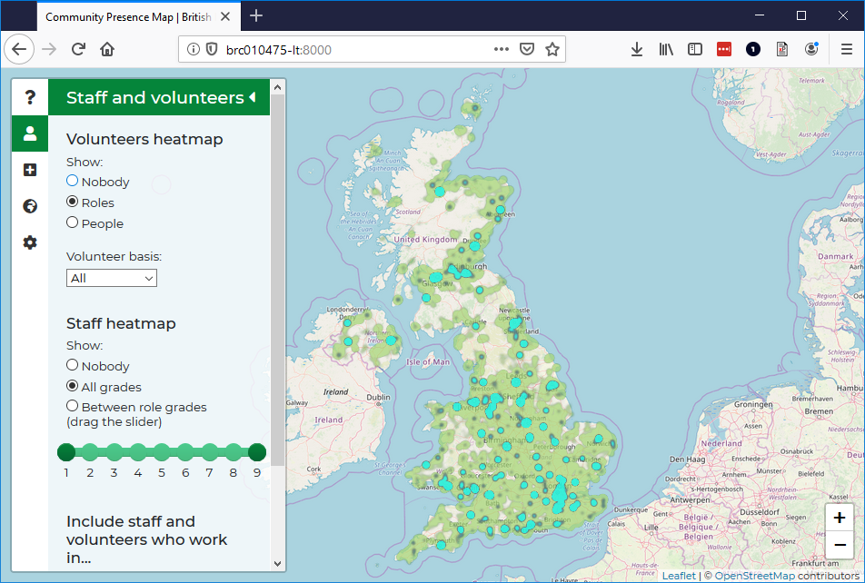
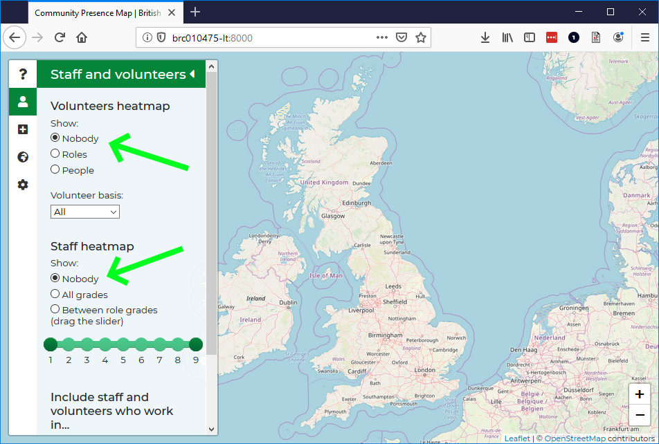
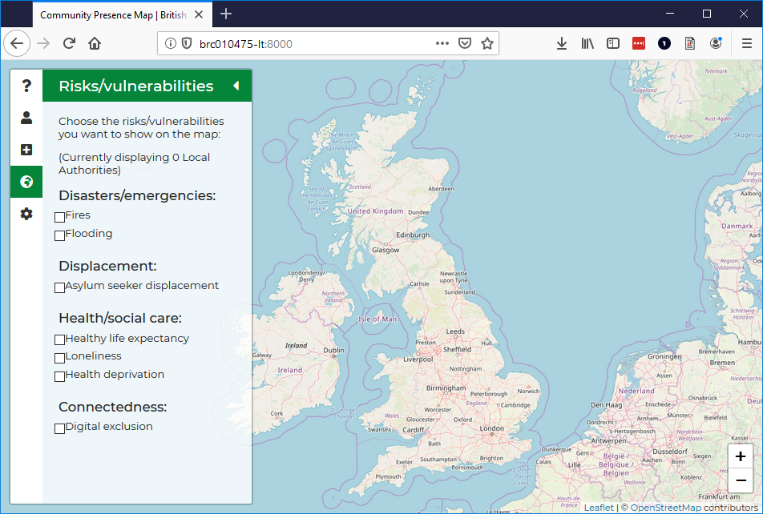
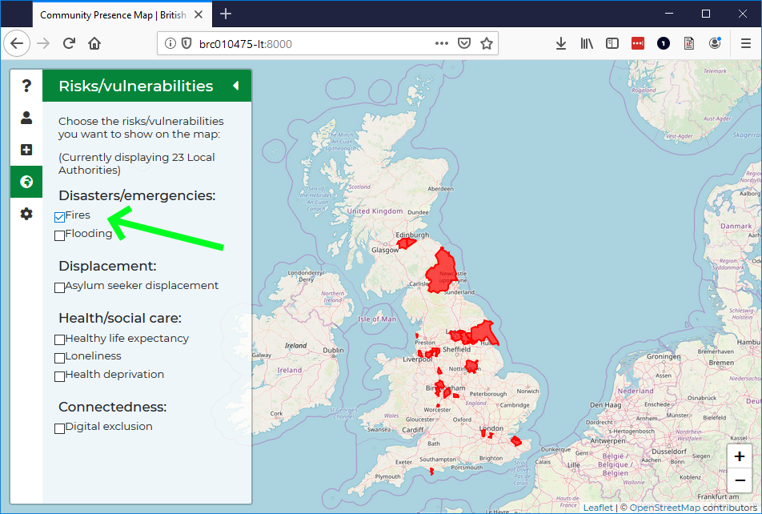
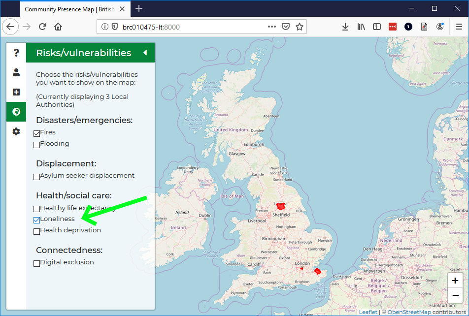
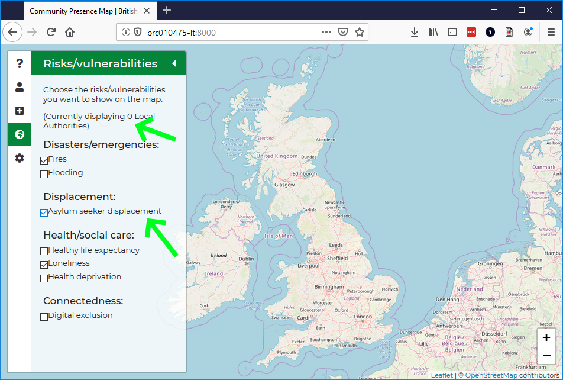

Upon opening the Community Presence Map, you'll see two overlapping heatmaps showing our volunteers (green) and staff (blue):

It's best to hide these heatmaps before looking at the risks. Click the icon to see options related to these heatmaps:

Click 'Nobody' under Volunteers heatmap and Staff heatmap to hide the heatmaps:

Next click the icon to show options for displaying at-risk Local Authorities:

Tick one or more indicators of risk to see the highest-risk Local Authorities on the map. For example, ticking 'Fires' will show the Local Authorities at highest risk of domestic fires (highlighted in red on the map):

Ticking more than one risk will show areas that might be vulnerable to multiple high risks. For example, ticking 'Loneliness' after ticking 'Fires' will show the areas at high risk of both:

Note that not all combinations of risks will yield results. For example, there are no Local Authorities at high risk of fires, loneliness and displacement:

Click on the red Local Authority areas for more information about their risks.